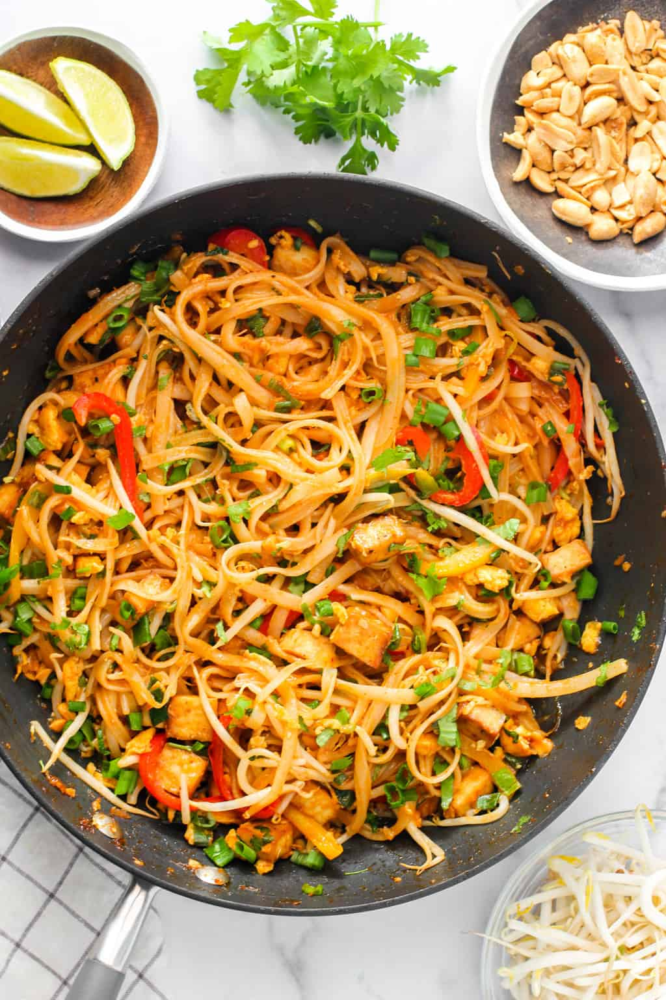

Pad Thai

Description
Pad Thai is a stir-fried rice noodle dish from Thailand, typically made with rice noodles, shrimp, peanuts, a scrambled egg, and bean sprouts.
Ingredients
- 14 oz Extra Firm Tofu baked
- 8 oz rice noodles
- 5 cups water
- 3 tablespoons oil
- 1 tablespoon garlic minced
- 1 bunch scallions
- 1 small red pepper
- 1 small yellow pepper
- 2 eggs whisked
- 6 oz Pad Thai Sauce
- 3 cups bean sprouts
- ½ cup peanuts roasted and coarsely chopped
- ½ cup cilantro finely chopped
- ½ lime cut into 4 wedges
Steps
- Bake, air fry, or pan fry tofu
- Bring 5 cups of water to a full boil. Place the rice noodles in a bowl and pour hot water over them. Mix with a fork so the noodles separate and not stick to each other. Soak for 10 minutes. Drain the noodles and reserve. Note: Follow instructions on the package if you are using a different variety of rice noodles.
- While the noodles are soaking, prep the vegetables. Cut the white portion of the scallions and chop into thin strips. Dice the green part of the scallions and reserve. Thinly slice the peppers, ½ cup each of red and yellow.
- Heat half of the oil in a large wok over high heat. Add garlic, white scallions, and peppers. Cook for 2 minutes as the garlic gets aromatic. Move the veggies to one side of the wok and add the remaining oil in the middle of the wok. Add eggs and scramble them as they start to cook.
- Next add the cooked noodles, baked tofu, and the Pad Thai Sauce. Mix well with a pair of tongs, tossing the noodles well in the sauce and all the other ingredients. Cook for 2 to 3 minutes or until the noodles are heated through.
- Add bean sprouts. Add half of the chopped green scallions, half of the peanuts, and half of the cilantro. Mix everything together. Serve hot topped with the remaining scallions, peanuts, cilantro, and with lime wedges.